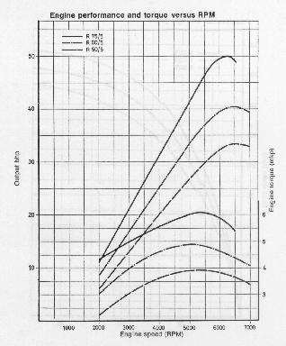
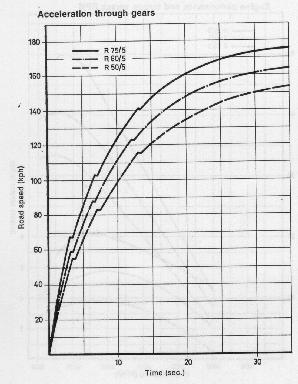
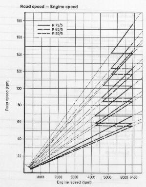
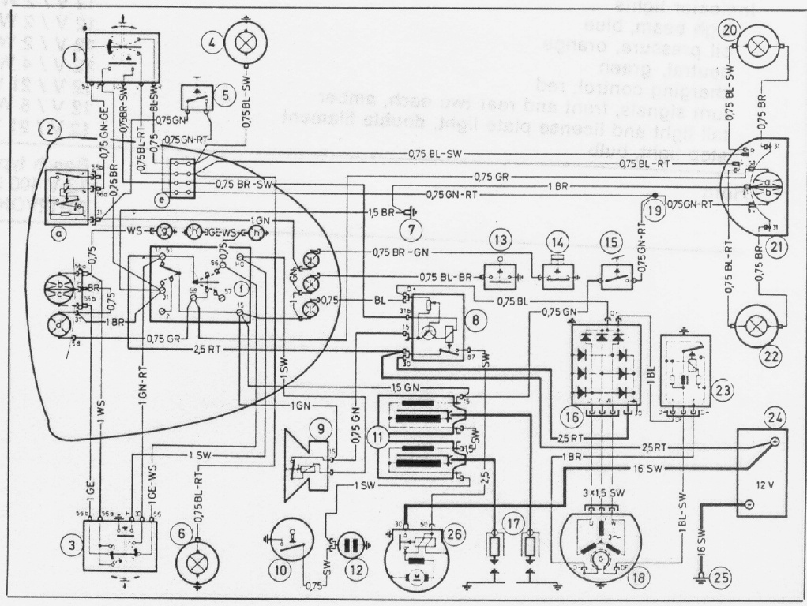

| R 50/5 | R 60/5 | R 75/5 | ||||
|---|---|---|---|---|---|---|
| Engine | Engine model | Four cycle opposed-twin with hemispherical combustion chambers | ||||
| Greatest actual output | HP at RPM | |||||
| HP at RPM | 36 / 6600 | 46 / 6600 | 57 / 6400 | |||
| Output per 1000 cc | HP / liter | 72 | 76 | 76 | ||
| Maximum torque | lb/ft at RPM | 29 / 5000 | 36 / 5000 | 43 / 5000 | ||
| Maximum permissible | speed RPM | 7000 | 7000 | 7000 | ||
| Permissible Cruising | speed RPM | 6500 | 6500 | 6300 | ||
| Idling | speed RPM | 600 - 800 | 600 - 800 | 600 - 800 | ||
| Max. permissible speed during | ||||||
| break-in period | ||||||
| up to 600 miles | RPM | 4000 | ||||
| up to 1200 miles | RPM | 5000 | ||||
| Average piston speed | ft/sec at RPM | 50.6 / 6400 | 50.6 / 6400 | 47.9 / 6200 | ||
| Number of cylinders | 2 | 2 | 2 | |||
| Cylinder arrangement | opposed | |||||
| Cylinder bore | mm | 67 | 73.5 | 82 | ||
| Piston stroke | mm | 70.6 | 70.6 | 70.6 | ||
| Effective stroke volume | c.c | 498 | 599 | 745 | ||
| Compression ratio | 8.6:1 | 9.2:1 | 9.0:1 | |||
| Dwell angle adjustment at .08" valve clearance (tolerance ±2.5°) | ||||||
| Intake opens | ATDC | ATDC | 10° BTDC | |||
| Intake closes | 40° ABDC | 40° ABDC | 50° ABDC | |||
| Exhaust opens | 40° BBDC | 40° BBDC | 50° BBDC | |||
| Exhaust closes | BTDC | BTDC | 10° BTDC | |||
| Breaker dwell angle | 110° + 1° | |||||
| Operating valve clearance measured when engine is cold | Intake | .006" | ||||
| Exhaust | .008" | |||||
| Rotation Right hand | clockwise when viewed toward alternator | |||||
| Lubricating system | high pressure wet sump | |||||
| Oil pump | Eeaton system (hypo-trochoid teeth) | |||||
| Fuel consumption in mpg US according to | 47 | 44,3 | 52,3 | |||
| DIN 70 030 | (at 67 mph) | (at 68 mph) | (at 68 mph) | |||
| R 50/5 | R 60/5 | R 75/5 | |||
|---|---|---|---|---|---|
| Carburetor | Design | Two Bing carburetors inclined with needle valve, throttle slide and Concentric lever float. | Two inclined Bing Butterfly valve, constant velocity carburetors with needle valve, vacuum slide & Concentric lever float. | ||
| Carburetor type left | 1 / 26 / 113 | 1 / 26 / 111 | 64 / 32 / 4 | ||
| right | 1 / 26 / 114 | 1 / 26 / 112 | 64 / 32 / 3 | ||
| Carburetor I. D. | mm | 26 | 26 | 32 | |
| Main jet | 135 | 140 | 140 | ||
| Needle jet | 2.68 | 2.68 | 2,73 | ||
| with acc. pump | |||||
| Jet Needle No. | 4 | 4 | 46-241 | ||
| Needle position | 3 | 2 | 3 | ||
| Idling jet | 35 | 40 | 45 | ||
| Idling air jet | -- | -- | dia 1 | ||
| Idling air screw / Idling Mixture regulating screw opened turns | 0,5 - 1,5 | ¼ - 1¼ | 1 | ||
| By-pass bore | mm dia | 0.8 | 0.8 | 0.7 | |
| Float valve | mm dia | 2.2 | 2.2 | 2.5 | |
| Float weight | g | 10 | 10 | 10 | |
| Intake air filter | One common "micro-star" dry air filter for both carburetors | ||||
| R 75/5 | |
|---|---|
| Starting (choke) jet | 0.6 |
| Starting air jet | 2.0 |
| Mixture hole in rotary valve | 2.0 |
| Rotary valve diaphragm | 65 - 810 |
| Distributing slide valve | g 102 |


| R 50/5 | R 60/5 | R 75/5 | ||
|---|---|---|---|---|
| Power Transmission | Clutch | Single plate dry clutch with diaphragm spring | ||
| Transmission | 4-speed, claw - type transmission mounted to the engine. Shock absorption of the drive in all speeds. Ratchet type foot shifting. | |||
| Transmission Ratios: | 1. Gear 3.896 : 1 2. Gear 2.578 : 1 3. Gear 1.875 : 1 4. Gear 1.50 : 1 | |||
| Power transmission from the transmission to the rear wheel | Enclosed drive shaft in the right swing arm tube with universal joint, equipped on the side of the rear drive with Hypoid Gear coupling. | |||
| Rear wheel drive | Palloid Spiral Bevel Gears | |||
| Rear drive ratio | 1 : 3.56 | 1 : 3.36 | 1 : 3,2 (until chassis No. ) | |
| Number of teeth | 9 / 32 | 11 / 37 | 10 / 32 (2,91 e.g. 11 / 32) | |
| R 50/5 | R 60/5 | R 75/5 | |||
|---|---|---|---|---|---|
| Chassis | Frame | Tubular steel cradle frame made of oval tubes with bolted-on frame rear section, not admitted for side-car | |||
| Suspension front wheel | Telescopic fork with large volume, double acting, hydraulic shock absorbers, front fork travel 8.43" | ||||
| rear wheel | Swing arm with 3-position-spring-legs and double acting, hydraulic shock absorbers rear swing arm travel 4.92" | ||||
| Lock angle of front fork | 46° | ||||
| Front wheel caster | 3.35" approximately | ||||
| Brakes | Aluminium alloy, full hub brakes with cast-in perlite rings | ||||
| Front wheel | Duplex brake (two leading brake shoes) | ||||
| rear wheel | Simplex brake | ||||
| Brake drum | 7.9" diameter, lining width 1.2" | ||||
| Effektive brake lining Area per brake in sq. in. | 17 approximately | ||||
| Rims | Front | 1.85 B x 19 | |||
| Rear | 1.85 B x 18 | ||||
| Tires | Front | 3.25 S 19 | |||
| Rear | 4.00 S 18 | ||||
| Maximum tire imbalance, measured in cmp at the inside diameter of the rim | 170 | ||||
| Corresponds to oz. | .28 - .32 | ||||
| R 50/5 | R 60/5 | R 75/5 | ||
|---|---|---|---|---|
| Tire inflation in psi | ||||
| Cold Front Wheel | 27 | 27 | 27 | |
| with passenger | 30 | 30 | 30 | |
| Rear Wheel | 30 | 30 | 30 | |
| with passenger | 35 | 35 | 35 | |
| When tires are hot, increase by 4 psi | ||||
| When driving at maximum speed for longer periods, increase the tire inflation by 3 psi | ||||
| Exhaust system | Sylencer | dia mm | 100 |
|---|---|---|---|
| Exhaust tube | dia mm | 38 x 1,5 |
| Fuels and Lubricants | Fuel | Regular | Hi Test | Hi Test | ||
|---|---|---|---|---|---|---|
| Tank capacity | gallons | 6.3 | ||||
| reserve | gallons | .5 | ||||
| Lubricating Oil Engine | Name-brand HD oil for gasoline engines | |||||
| Below 50°F outside temp. | SAE 20, SAE 10W30, SAE 10W50 | |||||
| R 50/5 | R 60/5 | R 75/5 | |||
|---|---|---|---|---|---|
| From 32-86°F outside temp. | SAE 30, SAE 20W40, SAE 20W50 | ||||
| Over 86°F outside temp. and for sustained high speed driving | SAE 40 | ||||
| Capacity | |||||
| without filter change | pints | 4.2 | |||
| with filter change | pints | 4.75 | |||
| Transmission | Name-brand hypoid gear oil SAE 90 | ||||
| Capacity pints | 1.7 | ||||
| Drive shaft housing | Name-brand hypoid gear oil SAE 90 | ||||
| Capacity pints | 0.2 | ||||
| Rear wheel drive | Name-brand hypoid gear oil SAE 90 | ||||
| Capacity pints | 0.5 | ||||
| Telescopic fork | Shock Absorber oil Shell 4001 BP Olex HL 2463 Aero-Hydraulic Shell aerofluid 4 Castrol BMW shock absorber oil | ||||
| Capacity per fork leg | ccm | 280 | |||
| Breaker lubricating felt and centrifugal timing advance | Bosch grease Ft 1 v 4 | ||||
| Guide shaft (for advance unit) | Bosch grease Ft 1 v 22 or Ft 1 v 26 | ||||
| Wheel bearings & other greasing points | Name-brand multi-purpose grease with 180°C dripping point | ||||
| Corrosion inlubiting oil | Engine corrosion inhibiting oil SAE 20 | ||||
| Upperlube conservative | Upperlube conservative for four-cycle engines | ||||
| Acid-free grease | Corrosion prevention grease | ||||
| Protective oil | Finish preservative | ||||
| R 50/5 | R 60/5 | R 75/5 | |||
|---|---|---|---|---|---|
| Dimensions | Overall width (engine) | 29.1" | 29.1" | 29.1" | |
| Overall height without mirror (motorcycle without load) |
40.7" | 40.7" | 40.7" | ||
| Saddle height without load | 33.5" | 33.5" | 33.5" | ||
| Overall length | 82.7" | 82.7" | 82.7" | ||
| Wheelbase | 54.5" | 54.5" | 54.5" | ||
| Ground clearance under load of a rider weighing 165 lbs. | 6.5" | 6.5" | 6.5" | ||
| Weights | Curb weight, including lubricants but less fuel and tools (lbs.) | 412 | 423 | 423 | |
| Curb weight, including lubricants, fuel and tools (lbs.) | 452 | 463 | 463 | ||
| Permissible total weight = curb weight + persons and baggage (lbs.) | 881 | 881 | 881 | ||
| Permissible wheel load Solo front at 27 psi tire pressure (lbs.) | 353 | ||||
| Rear, at 28 psi tire pressure (lbs.) | 539 | ||||
| Permissible wheel load with passenger | |||||
| front at 28 psi tire pressure (lbs.) | 391 | ||||
| rear at 32 psi tire pressure (lbs.) | 606 | ||||
| Maximum number of persons including rider | 2 persons |
| R 50/5 | R 60/5 | R 75/5 | |||
|---|---|---|---|---|---|
| Performance | The actually achieved maximum speed of a broken-in motorcycle depends to a large extent on the air resistance offered by the rider due to his size, posture and clothing, and upon road and weather conditions. | ||||
| Speed | |||||
| mph approximately | 98 | 104 | 110 | ||
| Acceleration from zero to | |||||
| 30 mph in s | 2.9 | 2.6 | 2.2 | ||
| 40 mph in s | 4.8 | 4.0 | 3.0 | ||
| 50 mph in s | 6.8 | 5.4 | 4.7 | ||
| 60 mph in s | 9.6 | 7.7 | 6.1 | ||
| 70 mph in s | 12.5 | 10.2 | 8.4 | ||
| 80 mph in s | 17.5 | 13.6 | 10.7 | ||
| Standing ¼ mile per hour | 17.2 | 15.8 | 14.6 | ||
| Standing kilometer in s | 32.3 | 30.4 | 28.2 | ||
| Average speed in mph achieved thereby | 68.3 | 73.3 | 79.5 | ||
| Speedometer gear ratio | (km) | .811 | .766 | .655 | |
| (miles) | 1.297 | 1.226 | 1.0625 | ||

| R 50/5 | R 60/5 | R 75/5 | |
|---|---|---|---|
| Electrical System | |||
| Battery | Varta, 12 V 15 Ah | ||
| Starter | Bosch DF 12 V .5 HP | ||
| Relay for repeat start prevention | Stribel SR 9570 | ||
| Three-phase alternator | Bosch G 1 14 V 13 A 19 | ||
| Three-phase alternator drive | Direct from crankshaft | ||
| Diode board | Bosch type 0 197 002 001 RS 20/1 A 1 A | ||
| Voltage Regulator | Bosch AD 1/ 14 V | ||
| Condenser | 0.2 uF - 25% | ||
| Ignition coils, two | Bosch E 6 V | ||
| Ignition breaker | Automatic centrifugal Advance on the camshaft | ||
| advance | |||
| start at rpm | 800 | ||
| end at rpm | 2500 | ||
| Breaker contact gap | 0.014" to 0.016" | ||
| Ignition Timing | 9° before TDC | ||
| Automatic timing advance | 25° +/- 2° 30' CS | ||
| Spark plugs | Bosch W 230 T 30 (R 50/5, R 60/5) Bosch W 200 T 30 (R 75/5) Beru 230/14/3 A (R 50/5, R 60/5) Beru 200/14/3 A (R 75/5) Champion N 7 Y (R 50/5, R 60/5, R 75/5) | ||
| Electrode gap | .027" | ||
| Head light | Bosch type 0 303 550 002 | ||
| Turn signal flasher | Hella 91 M 2 E 2 x 21 W-12 V | ||
| Head light high and low beam | Double filament bulb 45/40 W | ||
| Parking light | 12 V / 4 W | ||
| Indicator lights | |||
| high beam, blue | 12 V / 2 W | ||
| oil pressure, orange | 12 V / 2 W | ||
| neutral, green | 12 V / 2 W | ||
| charging control, red | 12 V / 4 W | ||
| turn signals, front and rear two each, amber | 12 V / 21 W | ||
| tail light and license plate light, double filament | 12 V / 5 W | ||
| stop light, bulb | 12 V / 21 W | ||
| Horn | Bosch type 0 320 123 013 12 V 400 HZ or Hella type B 31-12VOH3 | ||
| BL | = | blue |
| BR | = | brown |
| GE | = | amber |
| GR | = | grey |
| GN | = | green |
| RT | = | red |
| SW | = | black |
| WS | = | white |

Return to Owners Manual Contents.